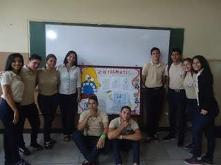

MENCIONES
MENCION DE INFORMÁTICA:
Los técnicos medios Formados en la mención informática estarán capacitados para desenvolverse por cuenta propia en el sector comercial, industrial y administrativo. Así mismo proporcionar al futuro Técnico Medio en la mención correspondiente una sólida formación y crecimiento de carácter general en el área científica, humanística y tecnológica que contribuya a la transformación que demanda el entorno donde se desenvuelve alcanzando una participación activa y efectiva en el futuro del país.
MISIÓN DE INFORMÁTICA:
Capacitar Técnicos Medios en las menciones de Registros y Estadísticas de Salud, Informática y Promoción Social en Deporte y Recreación, requeridos por el área comercial y de servicios administrativos que obtengan los conocimientos y competencias necesarias para incorporarse al mercado ocupacional y así satisfacer las exigencias del sector productivo y social de la región y el país.
VISIÓN DE INFORMÁTICA:
La misión de nuestra Institución se orienta en los siguientes principios:
►La Educación debe ser considerada como un derecho de todo ciudadano.
►Debe aportar iguales oportunidades.
►Integrar a la familia y la comunidad en el proceso educativo.
►Aceptar las diferencias individuales.
►Promover la ejecución de proyectos que integren a la comunidad.
►Fomentar el sentido de responsabilidad, cooperativismo, solidaridad y buenas relaciones dentro y fuera de la institución.
►Promover la participación de las fuerzas vivas de la localidad y la región en la solución de problemas de índole comunitario que coadyuven al mejoramiento y a la calidad.
MENCION DE REGISTRO Y ESTADISTICA DE SALUD:
►MISIÓN DE REGISTRO Y ESTADÍSTICAS DE SALUD:
Formación de ciudadanos de alto nivel capacitados como técnico medio en el área de registro y estadísticas de salud cuyo propósito es producir asegurar y preservar la información estadística derivada de la atención prestada al paciente en las instituciones hospitalarias.
►VISIÓN DE REGISTRO Y ESTADISTICA DE SALUD:
Formar los estudiantes de la escuela Técnica Monseñor Estanislao Carrillo en la mención de registro y estadística de salud como personal técnico capacitado y comperente, optimizando el procesamiento de los registros asistenciales que puedan permitir el estudio cuantitativo y cualitativo de los problemas de salud de la comunidad, con base en la toma de decisiones, redirección de programas y evaluación de recursos y formaciones.
MENCION DE PROMOCION EN DEPORTE Y RECREACION:
►MISIÓN DE PROMOCIÓN EN DEPORTE Y RECREACIÓN:
Ofrece una educación de calidad y excelencia académica en la formación de jóvenes, cuyo propósito es fortalecer el nivel pedagógico a fin de ofrecer una educación integral gratuita que satisfaga las necesidades y expectativas de los alumnos y representantes, en armonía con las demandas de desarrollo local, regional y nacional.
►VISIÓN DE PROMOCIÓN EN DEPORTE Y RECREACIÓN:
Está orientada hacia el desarrollo de un hombre crítico transformador, capaz de dar soluciones a los problemas de su entorno, fundamentado en el desarrollo endógeno y en la línea de construir aprendizajes a partir de proyectos educativos productivos que permitan la formación de un hombre y una mujer profesional, con una alta sensibilidad social, críticos y protagonistas de los procesos transformadores que su comunidad y la patria les reclaman. Es un tipo de profesional innovador que conoce, estudia y aplica las nuevas tecnologías actuando como agentes de cambios transformadores en Deporte.